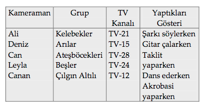

MANTIK BİLMECESİ-4
Beş değişik televizyon kanalında beş kameraman, beş grubu görüntüledi. Aşağıdaki ipuçlarından televizyon kanalını, kameramanı, görüntüledikleri grubu ve grubu ne yaparken görüntülediklerini bulunuz.
İpuçları
1. TV-15’de Arılar Grubu gösteri yapıyordu.
2. TV-12’de görüntülenen dans edenler değildi, bunlar Beşler idi.
3. Ali, şarkı söyleyen grubu görüntüledi. TV-28’dekiler ise taklit yapıyorlardı.
4. Can, Ateşböcekleri’ni görüntüledi, ama bu TV-21’de değildi.
5. Leyla TV-24’de çalışıyordu. TV-24’de görüntülenenler gitar çalmıyordu ve bunlar Çılgın Altılı’lar değildi.
6. Deniz olmayan ve TV-12’de çalışan bayan kameraman Kelebekler’i görüntülemedi.
Cevap:
